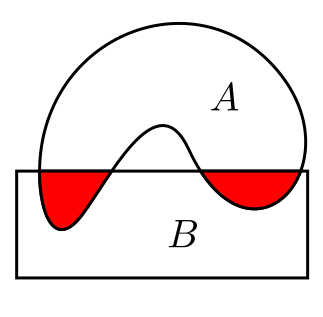

EXAMPLE (2022.16a): $(X,\tau)$ is a topological space and $A\subseteq X,$ and $C$ is a connected subset of $X$ that intersects both $A$ and $X \setminus A.$ Prove that $C$ intersects boundary of $A.$[2]
SOLUTION: We know that $A^\circ, \partial A$ and $(A^c)^\circ$ form a partition of $X.$ Let, if possible, $C\cap \partial A=\phi.$ Then $C = U\cup V,$ where $U= C\cap A^\circ$ and $V= C\cap (A^c)^\circ.$ In the subspace topology of $C$ both $U$ and $V$ are open. Also they are disjoint. So they are clopen in $C.$ Thus, they provide a disconnection of $C (\contra\bc C$ is connected$).$ ///EXAMPLE (2022.16b): $f:[0,1]\rightarrow[0,1]$ is a continuous function. Show that there exists $C\in[0,1]$ such that $f(C)=C,$ where $[0,1]$ is endowed with the usual subspace topology.[3]
SOLUTION:Intermediate value theorem লাগাও $f(x)-x$-এর উপর৷ ///EXAMPLE (2022.17): Prove that the union of any family of connected sets, every pair of which has an element in common, is a connected set in any topological space. Is the intersection of two connected sets alaways connected? Justify.[3+2]
SOLUTION: First part: Let $\{C_ \alpha~:~\alpha\in \Lambda\}$ be a family of connected subsets in some topological space $(X,\tau)$ such that $\forall \alpha,\beta\in \Lambda~~C_ \alpha\cap C_ \beta\neq\phi.$ Let $C = \cup_{ \alpha\in \Lambda} C_ \alpha.$ Let, if possible, $C$ be not connected. Let $C = D\cup E $ be a disconnection. Then $\forall \alpha\in \Lambda~~(C_ \alpha\subseteq D\mbox{ or } C_ \alpha\subseteq E).$Because:Otherwise, for some $\alpha\in \Lambda$ we have $C_ \alpha\cap D\neq\phi$ and $C_ \alpha\cap E\neq\phi.$ Then $(C_ \alpha\cap E)\cup(C_ \alpha\cap E)$ is a disconnection for $C_ \alpha.$Also, $\exists \alpha\in \Lambda~~C_ \alpha\subseteq D$ and $\exists \beta\in \Lambda~~C_ \beta\subseteq E.$
Because:Otherwise, either $D=\phi$ or $E=\phi.$Then $C_ \alpha\cap C_ \beta = \phi(\contra).$ Second part: No, the intersection of two connected sets need not be connected. For example, in the picture below $A$ and $B$ are two connected subsets of ${\mathbb R}^2$ (usual topology).
|  |
|---|
EXAMPLE (2023.14a): Prove that the set of real numbr ${\mathbb R}$ with lower limit topology is disconnected.[2]
SOLUTION: $(-\infty,0), ([0,\infty)$ provides one disconnection. ///EXAMPLE (2023.14b): Prove that a topological space containing a dense connected set is connected. [3]
SOLUTION: Let $(X,\tau)$ be a topological space with a dense subset $D$, which is connected. Shall show that $X$ is connected. Let, if possible, $X = U\cup V $ be a disconnection. Since $D$ is dense, and $U,V $ are non-empty open sets, hence $D\cap U\neq\phi$ and $D\cap V\neq\phi.$ Thus $D = (D\cap U)\cup (D\cap V)$ is a disconnection for $D (\contra\bc D$ is connected$).$ ///EXAMPLE (2023.17a): If every continuous real valued function on a topological space $(X,\tau)$ takes on all values between any two values that it assumes, then prove that $(X,\tau)$ is connected. [2]
SOLUTION: Let, if possible, $(X,\tau)$ have a disconnection $X = U\cup V.$ Let $f:X\rightarrow{\mathbb R}$ be defined as $f(x)=\left\{\begin{array}{ll}1&\text{if }x\in U\\ 0&\text{if }x\in V\\\end{array}\right..$ Since $U\cap V=\phi,$ this is well-defined. This function is continuous.Because: Let $A\subseteq{\mathbb R}$ be open.But $f$ does not take the value $\frac 12$ which is between $0$ and $1(\contra).$ ///Thus, in all the cases $f ^{-1}(A)\in \tau.$
- If $0\in A,$ but $1\not\in A,$ then $f ^{-1}(A)= V.$
- If $1\in A,$ but $0\not\in A,$ then $f ^{-1}(A)= U.$
- If $0,1\in A,$ then $f ^{-1}(A)= X.$
- If $0,1\not\in A,$ then $f ^{-1}(A)= \phi.$
EXAMPLE (2021.16a): If every real valued continuous function defined on a a topological space $X$ takes on every value between any two values that it assumes, then prove that $X$ is connected.[3]
SOLUTION:আগের অংকটাই৷ ///EXAMPLE (2023.17b): If $A$ is a connected subset consisting of at least two points in a metric space $(X,d),$ then prove that $A$ is uncountable. [3]
SOLUTION: Let $a\neq b\in A.$ We define $f:A\rightarrow{\mathbb R}$ as $f(x) = d(a,x).$ Then $f(a) = 0$ and $f(b) = d(a,b)>0.$ By intermediate value theorem, $f$ must take all values in $[0,d(a,b)].$ Hence $\forall y\in [0,d(a,b)]~~\exists x\in A~~f(x) = y.$ Since $[0,d(a,b)]$ is uncountable, so is $A.$ ///EXAMPLE (2021.17a): If $A$ is a connected subset of a metric space $(X,d)$ consisting of at least two points, then prove that $A$ is uncountable.[3]
SOLUTION:আগের অংকটাই৷ ///EXAMPLE (2021.15a): In a topological space $(X,\tau),$ $E$ is a connected subset of $X$ so that $E=A\cup B\cup C,$ where $A$ and $B$ are separated and $C$ is connected. Show that $A \cup C$ is connected.[3]
SOLUTION: ///EXAMPLE (2021.15b): Consider ${\mathbb R}$ endowed with the usual topology, $f:{\mathbb R}\rightarrow{\mathbb R}$ is any function such that $f({\mathbb Q})\subseteq{\mathbb R}\setminus{\mathbb Q}$ and $f({\mathbb R}\setminus{\mathbb Q})\subseteq{\mathbb Q}.$ Show that $f$ is not a continuous function.[2]
SOLUTION: ///EXAMPLE (2021.16b): Prove that a continuous mapping from a connected space to the real line having only rational values is constant.[2]
SOLUTION: Let, if possible, the function be not constant. Then $\exists a,b~~f(a)\neq f(b).$ By intermediate value theorem, $f$ must take all values between $f(a)$ and $f(b).$ Since ${\mathbb Q}^c$ is dense in ${\mathbb R},$ hence there must be at least one irrational between $f(a)$ and $f(b).$ But, by the given condition, $f $ cannot attain this value $(\contra).$ ///EXAMPLE (2021.17b): Find all components of the set of rational numbers endowed with the subspace topology from the usual topology of ${\mathbb R}.$[2]
SOLUTION: The singletons $\{r\}$ for $r\in{\mathbb Q}$ are the components. Obviously each such singleton is a connected subset of ${\mathbb Q}.$ Let, if possible, there be a connected component with more than one element. Let $r< s$ be in such a component, $A.$ Since ${\mathbb Q}^c$ is dense in ${\mathbb R},$ we have ${\mathbb Q}^c\cap[r,s]\neq\phi.$ We pick some $a\in{\mathbb Q}^c\cap[r,s].$ Then $A\cap(-\infty,a)\cap{\mathbb Q}$ and $A\cap(a,\infty)\cap{\mathbb Q}$ provide a disconnection of $A(\contra).$ ///EXAMPLE (2023.16b): Prove that each component of a topological space is closed. [2]
SOLUTION: Ler $A$ be a connected component of a topological space $(X,\tau).$ Then $A$ is the intersection of all its clopen supersets.Because: Let $C$ be a clopen superset of $A.$ Let $p\in C^c.$ Then $C^c$ and $C$ provide a disconnection for $A\cup\{p\}.$ Conversely, let $q$ be in the intersection of all clopen supersets of $A.$ Let, if possible, $A\cup\{q\}$ have a disconnection $(U,V).$ Since $A$ is connected, hence $A\subseteq U$ or $A\subseteq V.$ If $A\subseteq U,$ then $U$ is a clopen superset of $A,$ and hence $q\in U.$ So $V=\phi (\contra).$ Similarly, if $A\subseteq V,$ then $U=\phi (\contra).$Since arbitrary intersectons of closed sets are closed, hence $A$ must be closed. ///
EXAMPLE (2022.1d): A connected subset $G$ of the real line ${\mathbb R}$ with at least two points must be
EXAMPLE (2023.1h): A continuous function $f$ from an infinite connected space $(X,\tau)$ to a discrete two-point space $\{0,1\}$
EXAMPLE (2023.9a): Give example of a topological space which is $T_1$ but not $T_2.$ Justify your answer. [2]
SOLUTION: ${\mathbb R}$ with cofinite topology is one such example. Let $a\neq b\in{\mathbb R}.$ Then $\{a\}^c$ is an open neighbourhood of $b$ that does not contain $a.$ Hence $T_1.$ We consider $0\neq 1\in{\mathbb R}.$ Let $A$ and $B$ be any open neighbourhoods of $0$ and $1$, respectively. Then both $A, B$ are cofinite, and since ${\mathbb R} $ is infinite, both must be infinite. So $A\not\subseteq B^c$ and $B\not\subseteq A^c.$ Hence $A\cap B\neq\phi.$ So the space is not $T_2.$ ///EXAMPLE (2023.9b): Prove that a topological space $(X,\tau)$ is $T_1$ if and only if every neighbourhood of any limit point $p$ of any set $A\subseteq X$ intersects $A$ in countably infinite number of points.[2+3]
SOLUTION: অংকটার ভাষা নিয়ে একটু সমস্যা আছে৷ আমরা জানি যে, usual topology নিলে ${\mathbb R}$ হল $T_1.$ এর মধ্যে একটা set নিতে পারি $A=(0,1)$ যার একটা limit point হল $\frac 12.$ এর যেকোনো neighbourhood-ই $A$-কে uncountably infinite-সংখ্যক বিন্দুতে intersect করে৷ তবে এখানে countably infinite বলেছে কেন? এটা অনেকটা সেই ''কোন্ কোন্ মাসে আঠাশ দিন আছে?'' প্রশ্নটার মত৷ যেহেতু বলিনি ''কেবলমাত্র আঠাশ দিনই আছে'', তাই উত্তর হল সব মাসেই আঠাশ দিন আছে৷ এখানেও তেমনি countably infinite -এর মধ্যে uncountably infinite -ও ধরা আছে৷ বস্তুতঃ এখানে স্রেফ ''infinite'' বললেই সবচেয়ে ভালো হত৷ Let $U_1$ be any neighbourhood of $p.$ Since $p $ is a limit point of $A,$ hence $A\cap U_1$ contains at least one point $q_1$ other than $p.$ Since the space is $T_1,$ we can find some neighbourhood $U_2$ of $p$ such that $q_1\not\in U_2.$ As before we can find $q_2\neq p$ in $A\cap U_2.$ Clearly, $q_1\neq q_2,$ since $q_1\not\in U_2 $ and $q_2\in U_2.$ Again, by $T_1$ property, we can find neighbourhoods $U_3$ of $p$ such that $q_1, q_2\not\in U_3. $ and find $q_3\in A\cap U_3. $ Continuing in this way we can produce a (countably) infinite sequence of distinct points in $A\cap U_1.$ Conversely, let the given condition hold. Let, if possible, the space be not $T_1.$ Then we can find two distinct points $a,b$ that cannot be weakly separated. Then every neighbourhood of $a$ contains $b.$ Hence $a$ is a limit point of $\{b\}.$ But since $\{b\}$ is a just a finite set, not neighbourhood of $a$ can intersect $\{b\}$ at infinitely many points. This contradicts the given condition. ///EXAMPLE (2022.12b): Prove that ${\mathbb R}$ endowed with cofinite topology is not a first countable space.[2]
SOLUTION: Let, if possible, the space be first countable. Then there is countable local base $A_1,A_2,...$ at $0.$ Each $A_1^c$ is finite. Let $B = \cup_n A_n^c.$ Then $B$ is countable. Since ${\mathbb R}$ is uncountable, hence $B^c$ is uncountable. We pick some $r\in B^c$ such that $r\neq 0.$ Then $\{r\}^c$ is a neighbourhood of $0.$ However, it cannot be expressed as the union of any number of $A_n$'s. ///EXAMPLE (2021.1d): An uncountable set with cofinite topology is
EXAMPLE (2023.1f): Let $(X,\tau)$ be a co-countable space, where $X$ is an uncountable set. Then which of the following is true?
EXAMPLE (2021.1f): The number of $T_1$ topologies that can be defined on a finite set with $n$ elements is
EXAMPLE (2021.12b): If $(X,\tau)$ is a $T_1$ space and every intersection of open sets is open in $(X,\tau),$ prove that $\tau$ is the discrete topology on $X.$[2]
SOLUTION:আগের অংকের যুক্তিটাই খাটবে৷ ///EXAMPLE (2022.9a): Show that every metric space is a first countable space, but not necessarily second countable.[2]
SOLUTION: If $(X,d)$ is a metric space, then at each point $p$ a countable local base is $\left\{N\left(p,\frac 1n \right)~:~n\in{\mathbb N}\right\}.$ Consider the space ${\mathbb R}$ under the metric $d(x,y) =\left\{\begin{array}{ll}1&\text{if }x\neq y\\ 0&\text{otherwise.}\end{array}\right.. $ The topology induced by this metric is the discrete topology, where each singleton is a open set. Hence any base must contain all the singletons. Since ${\mathbb R}$ is an uncountable set, any base must be uncountable. So this metric space is not second countable. ///EXAMPLE (2022.9b): Let $X$ be an uncountable set, and $p$ be a fixed point in $X.$ Consider the topology $\tau=\{A\subseteq X~:~p\in A\}\cup\{\phi\}$ on $X.$ Examine whether $(X,\tau)$ is a second countable space.[1+2]
SOLUTION: No, it is not second countable. Let $q\neq p.$ Then $\{p,q\}$ is an open set, but $\{q\}$ is not. So $\{p,q\}$ must be in any base. But $q$ may be taken in uncountably infinitely many ways. So any base must be uncountably infinite. ///EXAMPLE (2023.11a): Let $(X,\tau)$ be a topological space and ${\cal B}$ a local base at $c\in X.$ Prove that a sequence $\{x_n\}_n$ converges to $c\in X$ if and only if for every $B\in{\cal B}$ there exists a positive integer $m$ such that for all $n\geq m,$ $x_n\in B.$ [3]
SOLUTION: (If part): Shall showEXAMPLE (2022.10): Let $(X,\tau)$ be a first countable space and $f:X\rightarrow Y$ be any function ($Y$ being any topological space) such that for any sequence $\{x_n\}$ converging to any point $x\in X,$ the sequence $\{f(x_n)\}$ converges to $f(x).$ Prove that $f$ is continuous on $X.$[5]
SOLUTION: Let, if possible, $f$ be not continuous. Then we can find some open $V$ in $Y$ such that $U = f ^{-1} (V)$ is not open in $X.$ Since $U$ is not open, hence we can pick some $a\in U$ such that no neighbourhood of $a$ is completely inside $U.$ Let $\{B_n\}$ be a local base at $a.$ Then $\forall n\in{\mathbb N}~~\exists x_n\in B_n\setminus U.$ Thus we have a sequence $\{x_n\}_n.$ Since this is sequence is outside $U,$ hence $f(x_n)$ is outside $V.$ Hence $f(x_n)\not\rightarrow f(a).$ However, $x_n\rightarrow a.$ (why?) ///EXAMPLE (2022.11): Let $f:X\rightarrow Y$, $g:X\rightarrow Y$ be two continuous functions from a topological space $(X,\tau)$ to a Hausdorff space $(Y,\sigma).$ Prove that
(a) $F = \{x\in X~:~f(x)=g(x)\}$ is a closed set. (b) $f|_D = g|_D\Rightarrow f=g,$ where $\bar D = X.$[3+2] SOLUTION: (a) Let $a\in F^c.$ Then $f(a)\neq g(a).$ Since $(Y,\sigma)$ is Hausdorff, $\exists U,V\in\sigma$ such that $f(a)\in U,$ $f(b)\in V$ and $U\cap V=\phi.$ So $f ^{-1} (U)$ and $g ^{-1} (V)$ are open sets in $X.$ Let $W = f ^{-1}(U)\cap g ^{-1}(V).$ It is an open set containing $a.$ For each $x\in W$ we have $f(x)\in U$ and $g(x)\in V.$ Since $U\cap V = \phi,$ hence $F(x)\neq g(x).$ So $W\subseteq F^c,$ proving that $F $ is open in $X.$ ///EXAMPLE (2022.12a): A $G_\delta $ set in a space $X$ is a set that equals a countable intersection of open sets of $X.$ Show that if $X$ is a first countable $T_1$-space, every singleton set is a $G_\delta $ set.[3]
SOLUTION: Take any $a\in X. $ Since $X$ is first countable, hence there is a countable local base $\{B_n~:~n\in{\mathbb N}\}.$ Claim: $\cap _n B_n = \{a\}.$ Justification: Clearly $a\in \cap_n B_n.$ Let $b\in X$ wher $b\neq a.$ Since $X $ is $T_1,$ we can find a neighbourhood $U$ of $a$ such that $b\not\in U.$ Now, there is some $k\in{\mathbb N}$ such that $a\in B_k\subseteq U.$ Hence $b\not\in\cap_n B_n.$ Since $b\neq a$ is arbitrary, the claim is justified./// Hence $\{a\}$ is a $G_ \delta$ set, as required. ///EXAMPLE (2023.10): Let $X$ be an uncountable set and $p$ be a fixed point in $X.$ Define $$\tau = \{G\subseteq X~:~\text{either } p\not\in G\text{ or if }p\in G\text{ then } X\setminus G\text{ is finite}.\}$$ Prove that $(X,\tau)$ is a topological space which is not first countable. [2+3]
SOLUTION: First part: $\bc\not\in \phi,$ $\tf \phi\in\tau.$ $\bc p\in X $ and $X $ is cofinite, $\tf X\in\tau.$ Let $\{G_ \alpha~:~\alpha\in A\}\subseteq \tau.$ If $\exists \alpha\in A~~(p\in G_ \alpha$ and $G$ is cofinite$),$ then so is $\cup_{\alpha\in A} G_ \alpha, $ and hence $\cup_{\alpha\in A} G_ \alpha\in\tau.$ Otherwise, $\forall \alpha\in A~~p\not\in G_ \alpha.$ Hence $p\not\in \cup_{\alpha\in A} G_ \alpha.$ Hence $\cup_{\alpha\in A} G_ \alpha\in\tau.$ Let $H_1, H_2\in\tau.$ If $p\notin H_1 $ or $p\notin H_2, $ then $p\notin H_1\cap H_2. $ Hence $H_1\cap H_2\in\tau.$ Otherwise, $p\in H_1,H_2$ and both $H_1,H_2$ are cofinite. So $p\in H_1\cap H_2$ and $H_1\cap H_2$ is cofinite. So $H_1\cap H_2\in\tau.$ Hence $\tau$ is a topology. Second part: Let, if possible, the topology be first countable. Let a countable local base at $p $ be $\{B_n~:~n\in{\mathbb N}\}.$ Since each $B_n$ contains $p,$ hence each $B_n$ is cofinite. Let $C = \cup_n B_n^c,$ which is a countable union of finite sets, and hence countable. Since $X$ is uncountable, $C^c\neq\phi.$ We take any $x\in C.$. Then $\{x}^c$ is an open set containing $p.$ So there must be some $n\in{\mathbb N}$ such that $B_n\subseteq\{x\}^c,$ ie, $c\in B_n^c(\contra\bc x\in C^c).$ ///EXAMPLE (2021.11b): Consider a topology $\eta$ on ${\mathbb R}$ given by $\eta = \{U\subseteq{\mathbb R}~:~\text{ either } 1\not\in U \text{ or } {\mathbb R}\setminus U\text{ is finite}\}.$ Prove that $({\mathbb R},\eta)$ is not first countable.[2]
SOLUTION:আগেরটার মতই৷ ///EXAMPLE (2023.11b): Let $f:(X,\tau_1)\rightarrow(Y,\tau_2)$ be an open, continuous surjective map, where $X$ is first countable. Prove that $Y$ is first countable.[2]
SOLUTION: Let $y\in Y.$ Since $f$ is surjective, $y = f(x)$ for some $x\in X.$ Since $X$ is first countable, there is a countable local base $\{B_n~:~n\in{\mathbb N}\}$ at $x.$ Let $U_n = f(B_n).$ Since $f$ is an open map, hence $U_n$'s are all open. Shall show that $\{U_n~:~n\in{\mathbb N}\}$ is a local base at $y.$ We take any open set $V$ in $Y$ such that $y\in V.$ Since $f $ is continuous, $f ^{-1} (V)$ is open in $X.$ Also, its contains $x.$ So there is some $n\in{\mathbb N}$ such that $B_n\subseteq f ^{-1}(V).$ So $f(B_n)\subseteq V,$ ie, $U_n\in V.$ Hence the result. ///EXAMPLE (2021.11a): $f:(X,\tau)\rightarrow (Y,\tau')$ is a open, continuous surjection, and $(X,\tau)$ is a first countable space. Prove that $Y$ is first countable.[3]
SOLUTION:আগের অংকটাই৷ ///EXAMPLE (2021.12a): $f:(X,\tau)\rightarrow (Y,\tau')$ is continuous and injective, where $Y$ is a Hausdorff space. Show that $X$ is Hausdorff.[3]
SOLUTION: Let $a,b\in X$ be distinct. (If no such distinct pair, then vacuously Hausdorff.) Since $f$ is injective, $f(a)$ and $f(b)$ are distinct in $Y.$ Since $Y$ is Hausdorff, can find disjoint open sets $A$ and $B$ in $Y$ such that $f(a)\in A$ and $f(b)\in B.$ Since $f$ is continuous, hence $f ^{-1}(A)$ and $f ^{-1}(B)$ are open. Also they are disjoint. Since $a\in f ^{-1}(A)$ and $b\in f ^{-1}(B)$, hence they provide a strong separation of $a,b.$ ///EXAMPLE (2023.12a): If $(X_1,\tau_1)$ and $(X_2,\tau_2)$ are two $T_2$ spaces, then prove that their product space $(X,\tau)$ is also a $T_2$ space. [3]
SOLUTION: Let $(a_1,a_2),(b_1,b_2)$ be two distinct points in $ X=X_1\times X_2.$ Then $a_1,b_1\in X_1$ and $a_2,b_2\in X_2.$ Case I: $a_1\neq b_1$ : Since $X_1$ is $T_2,$ we can find two disjoint open sets $A_1,B_1$ in $X_1$ such that $a_1\in A_1$ and $b_1\in B_1.$ Also we take any two open sets $A_2,B_2$ in $X_2$ such that $a_2\in A_2$ and $b_2\in B_2.$ Then $A_1\times A_2$ and $B_1\times B_2$ are disjoint open sets in $X$ containing $(a_1,b_1)$ and $(a_2,b_2)$, respectively. Case I: $a_1= b_1$: Then we must have $a_2\neq b_2.$ We repeat the above agument with $X_2$ this time, since $X_2 $ is also Hausdorf. ///EXAMPLE (2023.12b): Let $f:(X,\tau_1)\rightarrow(Y,\tau_2)$ be a continuous map, and $Y$ be $T_2.$ Prove that the set $\{(x,f(x))~:~x\in X\}$ is a closed set in $X\times Y,$ where $X\times Y$ is endowed with the product topology.[2]
SOLUTION: Let $G=\{(x,f(x))~:~x\in X\}.$ We take any $(a,b)\in (X\timesY)\seminus G.$ So $b\neq f(a).$ Since $Y$ is $T_2,$ hence can find two disjoint open sets $U$ and $V$ in $Y$ such that $f(a)\in U$ and $b\in V.$ Since $f$ is continuous, $f ^{-1}(U)$ and $f ^{-1}(V)$ open in $X.$ Also these are disjoint. Clearly, $a\in f ^{-1}(U).$ Consider the open set $f ^{-1}(U)\times V$ in $X\times Y.$ It contains $(a,b).$ Also $\forall x\in f ^{-1}(U)~~f(x)\in U,$ and hence $\forall x\in f ^{-1}(U)~~f(x)\not\in V.$ So $f ^{-1}(U)\times V\subseteq G^c,$ completing the proof. ///EXAMPLE (2021.2): Let $(X,\tau)$ be the topological product of the family of topological spaces $\{(X_i,\tau_i)~:~i=1,2,...,n\}$ and $p_i:X\rightarrow X_i$ denote the $i$-th projection map for all $i=1,...,n.$ Prove that
(a) $p_i$ is an open map for each $i.$ (b) $\tau$ is the smallest topology on $X$ such that each $p_i$ is continuous.[2+3] SOLUTION: (a) Let $U$ be an open set in the product topology. Shall show that $p_i(U)$ is open in $X_i.$ Take any point $a\in p_i(U).$ Then there is some point $b\in U$ such that $a = p_i(b).$ Since rectangles form a base in the product topology, $\forall k$ there must exist open sets $U_k$ in $X_k$ such that $b\in U_1\times\cdots\times U_n\subseteq U.$ So $p_i(b)\in p_i(U_1\times\cdots\times U_n)\subseteq p_i(U),$ ie, $a\in U_i\subseteq p_i(U).$ Hence $p_i(U)$ is open in $X_i,$ as required. (b) To make $p_i$'s continuous, we need to have all sets of the form $X_1\times\cdots X_{i-1}\times U_i\times X_{i+1}\times\cdots X_n$ in the topology, where $U_i$ is any open set in $X_i.$ Taking finite itersections, the topology must contain all rectangles. Since these constitute a base for $\tau,$ we must have $\tau$ inside the topology, completing the proof. ///EXAMPLE (2023.8): Let $(X,\tau)$ be the topological product of a family of topological spaces $\{(X_i,\tau_i)~:~i=1,2,...,n\}$ and $p_i:X\rightarrow X_i$ denote the $i$-th projection map for all $i=1,2,...,n.$ Then prove that
(a) $p_i$ is an open map for all $i=1,2,...,n.$ (b) the product topology $\tau$ is the smallest topology on $X$ such that each projection map is continuous. [2+3] SOLUTION:আগের অংকটাই৷ ///EXAMPLE (2021.3): Prove that a topological invariant is a metric invariant. Is the converse ture? Justify.[3+2]
SOLUTION: ///EXAMPLE (2021.4): Let $(X,d)$ be a metric space and $A$ be a non-empty subset of $X.$ Prove that the functions $f_A:(X,\tau(d))\rightarrow{\mathbb R}$ defined by $f_A(x) = \inf\{d(x,a)~:~a\in A\},$ for all $x\in X,$ is continuous on $X$ (where $\tau(d)$ denotes the metric topology on $X$ induced by $d$). Hence prove that for any $A\subseteq X,$$$ \overline A = \{x\in X~:~d(x,A)=0\} $$ in $(X,\tau(d)).$[3+2]
SOLUTION: Shall showBecause: Take any $y\in N\left(x,\frac \epsilon2\right)$ and any $a\in A.$ Then, by triangle inequality, $d(a,y) \leq d(a,x)+\d(x,y) < d(a,x) + \epsilon.$ So, taking infimum over $a\in A$ , we have $$f_A(y) \leq f_A(x) + \frac \epsilon2 < \alpha-\frac \epsilon2 < \alpha.$$Hence $G\in\tau(d).$ ///
EXAMPLE (2021.5): (a) $\tau$ is the usual topology on ${\mathbb R}$ and $\tau'=\{A\cup B~:~A\in\tau,~~B\subseteq {\mathbb R}\setminus{\mathbb Q}\}.$ Prove that $\tau'$ is a topology on ${\mathbb R}$ which is finer than $\tau.$
(b) Find the interior of the set $\{\sqrt2+n~:~n\in{\mathbb N}\}$ in $({\mathbb R},\tau').$ [3+2] SOLUTION: (a) $\tau'$ is a topology: $\phi\in\tau$ and $\phi\subseteq {\mathbb Q}^c.$ Hence $\phi = \phi\cup\phi\in\tau'.$ Again, ${\mathbb R}\in\tau.$ So ${\mathbb R} = {\mathbb R}\cup\phi\in\tau'.$ Let $\{G_ \alpha~:~\alpha\in \Lambda\}\subseteq\tau'.$ Then $\forall \alpha\in ^{-1}~~ G_ \alpha = A_ \alpha \cup B_ \alpha$ for some $A_ \alpha\in\tau$ and some $B_ \alpha\in{\mathbb Q}^c.$ Hence $$\cup_{\alpha\in \Lambda} G_ \alpha = \ub{\cup_{\alpha\in \Lambda} A_ \alpha}_A \bigcup \ub{\cup_{\alpha\in \Lambda} B_ \alpha}_B \in\tau',$$ since $A\in\tau$ and $B\subseteq{\mathbb Q}^c.$ Finally, let $G_1,G_2\in\tau'.$ Then $G_i = A_i\cup B_i $ for $i=1,2$ for some $A_1,A_2\in\tau $ and $B_1,B_2\subseteq{\mathbb Q}^c.$ So $$G_1\cap G_2 = (A_1\cap A_2)\cup (B_1\cap B_2)\in\tau',$$ since $A_1\cap A_2\in\tau$ and $B_1\cap B_2\subseteq{\mathbb Q}^c.$ $\tau'$ is finer than $\tau$: Since $\phi\subseteq{\mathbb Q}^c,$ hence $\forall A\in\tau~~A = A\cup\phi\in \tau'.$ (b) Let $C= \{\sqrt2+n~:~n\in{\mathbb N}\}.$ Since $\phi\in\tau$ and $\forall n\in{\mathbb N}~~\sqrt2+n\in{\mathbb Q}^c,$ we see that $\{\sqrt2+n\} = \phi\cup\{\sqrt2+n\}\in\tau'.$ Thus, each singleton subset of $C$ is open wrt $\tau'.$ Hence the required interior is $C$ itself. ///EXAMPLE (2021.6a): Prove that an isometry $f:(X,d)\rightarrow(Y,d')$ is a homeomorphism from $(X,\tau(d))$ to $(Y,\tau(d')).$ (Here $(X,d)$ and $(Y,d')$ are two metric spaces, and $\tau(d)$ and $\tau(d')$ are the topologies generated by the corresponding metric on $X$ or $Y,$ respectively.)[3]
SOLUTION: এখানে ভাষার সামান্য সমস্যা আছে৷ Isometry মানে এমন function, যেটা দূরত্ব রক্ষা করে, মানে $x_1,x_2$-র মধ্যে দূরত্ব যা, $f(x_1), f(x_2)$-এর মধ্যের দূরত্বও তা-ই হবে৷ এর মধ্যে কোথাও onto ধরা নেই৷ কিন্তু এখানে সেটা ধরে নিতে হবে৷ We assume that $f$ is onto. Since $f$ is an isometry, it is one-one.Because: $x_1\neq x_2\Rightarrow d(x_1,x_2) > 0 \Rightarrow d'(f(x_1),f(x_2))= d(x_1,x_2)> 0\Rightarrow f(x_1)\neq f(x_2).$Shall show that $f $ is continuous, ie
EXAMPLE (2021.6b): If $\{A_\alpha~:~\alpha\in \Lambda\}$ is an infinite family of subsets in any topological space $(X,\tau),$ then the equality $\overline{\cup_{\alpha\in \Lambda} A_\alpha} = \cup_{\alpha\in \Lambda} \overline{A_\alpha}$ is always true--correct or justify.[2]
SOLUTION: The result is not correct. Counterexample: ${\mathbb R}$ with usual topology. $A_n=\left\{ \frac 1n \right\}$ for $n\in{\mathbb N}.$ Then $\overline{\cup_n A_n}= \{0\}\cup \cup_n A_n.$ But $\cup_n \overline A_n}= \cup_n A_n,$ which does not contain $0.$ A possible correction is: $\cup_{\alpha\in \Lambda} \overline{A_\alpha}\subseteq \overline{\cup_{\alpha\in \Lambda} A_\alpha}.$ This is correct, because if $A= \cup_ \alpha A_ \alpha$, then $\forall \alpha~~A_ \alpha\subseteq A.$ Hence $\forall \alpha~~\overline A_ \alpha\subseteq \overline A.$ So $\cup_\alpha\overline A_ \alpha\subseteq \overline A.$ ///EXAMPLE (2021.7a): $(X,\tau)$ is a topological space and $D$ is a dense subset of $X.$ Prove that, for an open subset $Y$ of $X,$ $D\cap Y$ is dense in the subspace topology on $Y.$ Is the result true if $Y$ is not open? Justify.[3]
SOLUTION: First part: Let $V$ be any non-empty open set in $Y$ wrt the subspace topology. Let $U = V\cup (X\setminus Y).$ This is must be open in $X.$ for some non-empty $U\in\tau.$ Since $D$ is dense in $X,$ hence $U\cap D\neq\phi.$ So $V\cap (D\cap Y) = (U\cap Y)\cap (D\cap Y) = U\cap D\cap Y. $ ///EXAMPLE (2021.7b): $(X,\tau)$ is a topological space and $D$ is a dense subset of $X.$ Prove that for a continuous surjection $f:(X,\tau)\rightarrow(Z,\tau')$ the set $f(D)$ is dense in $Z,$ where $(Z,\tau')$ is any topological space.[2]
SOLUTION: Take any non-empty $U\in\tau'.$ Then $f ^{-1} (U\cap f(D)) = f ^{-1} (U)\cap f ^{-1} (f(D)).$ Since $D\subseteq f ^{-1}(f(D)).$ Also $f$ being continuous, $f ^{-1}(U)\in\tau.$ Also $f ^{-1}(U)\neq\phi,$ since $U\neq\phi.$ Since $D$ is dense, hence $f ^{-1}(U)\cap D\neq\phi.$ So $f ^{-1} (U)\cap f ^{-1} (f(D))\neq \phi.$ So $f(D)\cap U\neq\phi.$ Hence $f(D)$ is dense in $(Z,\tau').$ ///EXAMPLE (2021.8): If $(X,\tau)$ is a second countable space and ${\cal B}$ is a base for $\tau,$ then prove that there exists a countable subfamily ${\cal D}$ or ${\cal B}$ such that ${\cal D}$ is a base for $\tau.$[5]
SOLUTION: Let $\{C_n~:~n\in{\mathbb N}\}$ be a countable base for $\tau.$ Then each $C_n\in\tau.$ So $\forall n\in{\mathbb N}~~\exists B_n\in{\cal B}~~B_n\subseteq C_n.$ Then the subcollection ${\cal D}=\{B_n~:~n\in{\mathbb N}\}$ is again a base. Clearly, $B_n\in\{\cal B}\subseteq\tau.$ Let $U\in\tau$ and $x\in U.$ Then $\exists n\in{\mathbb N} ~~x\in C_n\subseteq U.$ ///EXAMPLE (2021.9): Let $f:X\rightarrow Y$ be any function from a topological space $X$ into a topological space $Y.$ If $f$ is continuous, then prove that the graph of $f$ defined by $G(f) = \{(x,f(x))~:~x\in X\}$ is homeomorphic to $X.$[5]
SOLUTION: Consider the map $g:X\rightarrow G(f)$ defined by $g(x) = (x,f(x)).$ Clearly, this is a bijection. Also both the componet functions are continuous, and so $g$ is continuous. Shall show that $g $ is an open map. Let $U$ be an open set in $X.$ Then $g(U) = (U\times Y)\cap G(f),$ which is open in $G(f).$ ///EXAMPLE (2021.10a): Prove that a topological space $(X,\tau)$ is Hausdorff if the diagonal $\{(x,x)~:~x\in X\}$ is a closed set in the product space $(X\times X,\tau\times\tau).$[3]
SOLUTION: If part: Let $D=\{(x,x)~:~x\in X\}$ be closed in the product space. Let $x\neq y\in X.$ Then $(x,y)\in D^c.$ Since $D^c$ is open in the product space, and the rectangles form a base in its topology, hence $(x,y)\in U\times V\subseteq D^c$ for some $U,V\in\tau.$ Since $U\times V\subseteq D^c,$ hence $U\cap V = \phi.$ Also $x\in U$ and $y\in V.$ Thus $U$ and $V$ provide a strong separation of $x,y.$ ///EXAMPLE (2021.10b): Prove or disprove: In a topological space $(X,\tau)$, if every convergent sequence in $X$ has unique limit, then $X$ is a $T_2$ space.[2]
SOLUTION: The statement is false. Counterxample: ${\mathbb R}$ with co-countable topology. It is not Hausdorff, because all non-empty open sets intersect. Each convergent sequence is eventually constant.Because: Let $x_n\rightarrow L.$ Then $G = \{x_n\}^c\cup\{L\}$ is an open neighbourhood of $L.$ So $\exists K\in{\mathbb N}~~\forall n\geq K~~x_n\in G.$ But $G$ contains no $x_n$ except those equal to $L.$ Hence we must have $\exists K\in{\mathbb N}~~\forall n\geq K~~x_n = L.$Wikipedia-র এখানে একটা counterexample দেওয়া আছে, যেটা ভুল৷ ///